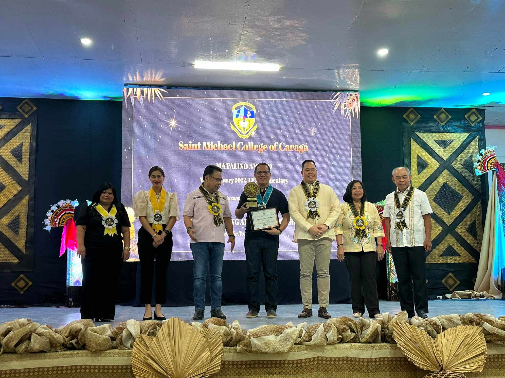
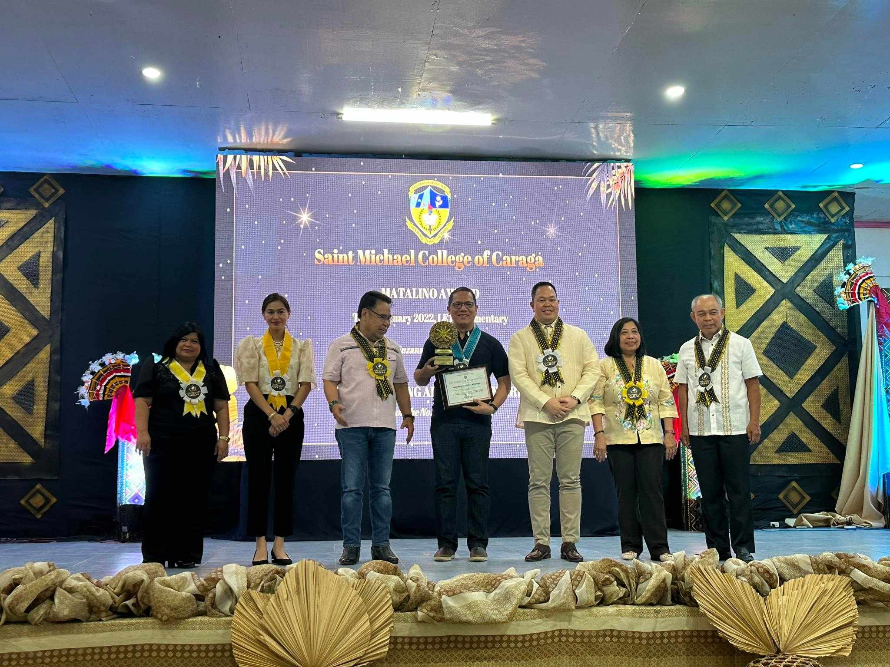
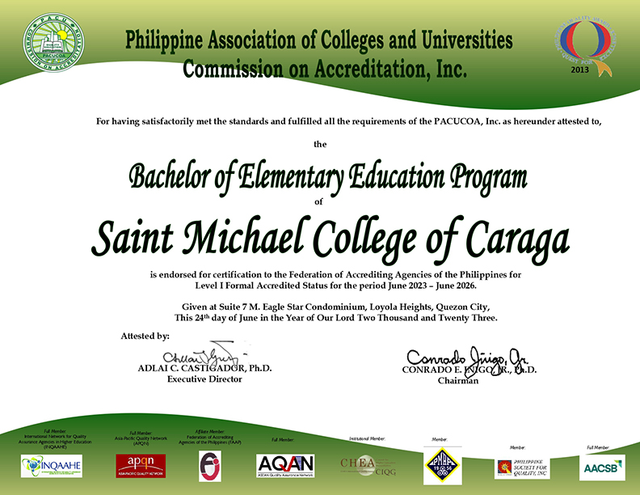
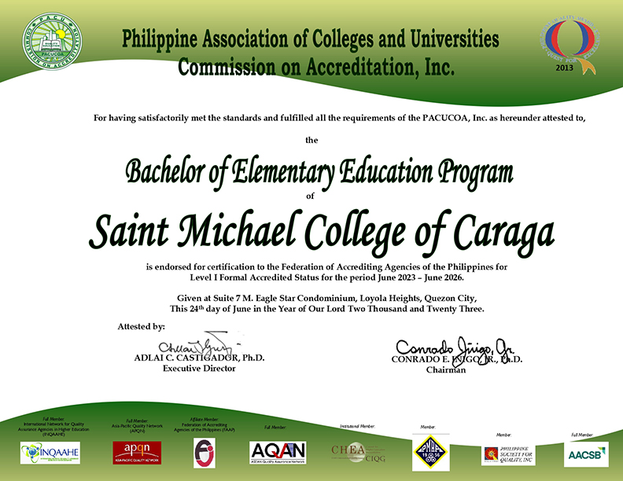

VISION
Saint Michael College of Caraga Envisions to be a University by 2035 and Upholds Spiritual Formation and Excellence in Teaching, Service, and Research.
MISSION
SMCC shall provide spiritual formation and learning culture that will ensure the students with excellent and rewarding learning experience that transform lives, abound spirituality, develop skills and prepare future leaders.
SMCC shall engage in dynamic, innovative, and interdisciplinary researches that are publishable to advance and achieve institutional initiatives.
SMCC shall commit to serve the diverse and local communities in fostering innovations through service-learning that enhances reciprocal community partnerships for spiritual and social development.
GOAL
Uphold Culture of Excellence in the Areas of Spiritual Formation, Instruction, Research, and Extension, thus Produce Graduates that are Globally Competent, Spiritally Embodied, and Socially Responsible.
GENERAL OBJECTIVE
THE MICHAELINIAN IDENTITY
Secured by Saint Michael the Archangel’s Sword of Bravery and Victory, nourished by the faithful acceptance and practice of the Christian teachings and guidance of the Catholic church, animated by Mary’s maternal devotion and intercession, guided by the gospel values, and empowered by Christ’s life and examples – the Michaelinians of today and tomorrow are persons who are:
S– ocially Responsiblefor the respect, care, love and development of God’s creations as such at all times demonstrate and live out their social responsibilities;
M– issionaries of Christian Valuesin possessing a faith that is dynamic to imbibe and to proclaim and promote the Christian values, hence, sharing in the mission of Christ and of the Catholic church to make all people members of one sheepfold of God;
C – ommitted Individuals and/or Leadersas equated to the faithful commitment of Jesus to His Father, thus, upholding unconditional commitment to value-filled life and actions of love and mercy;
C – ompetent in their Chosen Fields of Endeavorby being aware, curious, and interested in learning about the world and how it works in order to possess the ability to innovate and ensure success.
Therefore, Michaelinians have the identities of Social Responsibility, Missionaries of Christian Values, Committed Individuals and/or Leaders, and Competent in their fields of endeavor which are paramount to transform people to be person-oriented, persons of values, persons of faith and love for God, and persons of love and mercy for others.
 



.png)